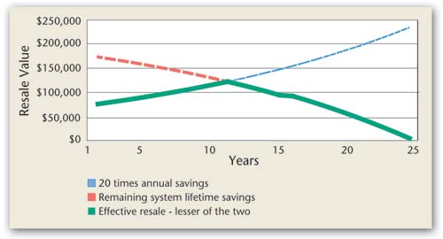

ANDY BLACK/ONGRID SOLAR
This chart shows changes in value of a property with a solar system. It appreciates until about year 11, then is limited by the savings the system will provide in its remaining lifetime.